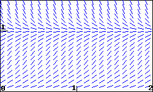

The slope field for a population \(P\) modeled by \(dP/dt = 5 P - 5 P^2\) is shown in the figure below.

(a) On a print-out of the slope field, sketch three non-zero solution curves showing different types of behavior for the population \(P\text{.}\) Give an initial condition that will produce each:
\(P(0) =\) ,
\(P(0) =\) , and
\(P(0) =\) .
(b) Is there a stable value of the population? If so, give the value; if not, enter none:
Stable value =
(c) Considering the shape of solutions for the population, give any intervals for which the following are true. If no such interval exists, enter none, and if there are multiple intervals, give them as a list. (Thus, if solutions are increasing when \(P\) is between 1 and 3, enter (1,3) for that answer; if they are decreasing when \(P\) is between 1 and 2 or between 3 and 4, enter (1,2),(3,4). Note that your answers may reflect the fact that \(P\) is a population.)
\(P\) is increasing when \(P\) is in
\(P\) is decreasing when \(P\) is in
Think about what these conditions mean for the population, and be sure that you are able to explain that.
In the long-run, what is the most likely outcome for the population?
\(P\to\)
(Enter infinity if the population grows without bound.)
Are there any inflection points in the solutions for the population? If so, give them as a comma-separated list (e.g., 1,3); if not, enter none.
Inflection points are at \(P =\)
Be sure you can explain what the meaning of the inflection points is for the population.
(d) Sketch a graph of \(dP/dt\) against \(P\text{.}\) Use your graph to answer the following questions.
When is \(dP/dt\) positive?
When \(P\) is in
When is \(dP/dt\) negative?
When \(P\) is in
(Give your answers as intervals or a list of intervals.)
When is \(dP/dt\) zero?
When \(P=\)
(If there is more than one answer, give a list of answers, e.g., 1,2.)
When is \(dP/dt\) at a maximum?
When \(P=\)
Be sure that you can see how the shape of your graph of \(dP/dt\) explains the shape of solution curves to the differential equation.